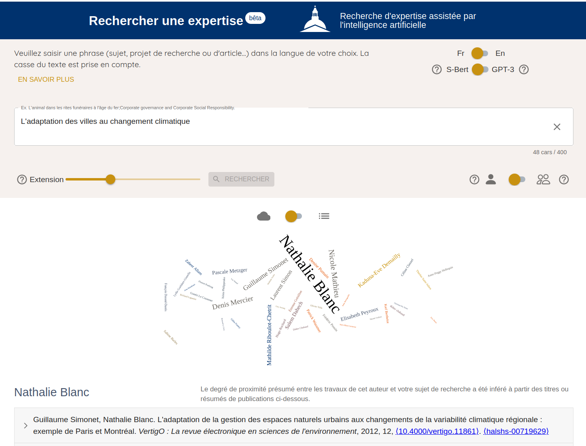
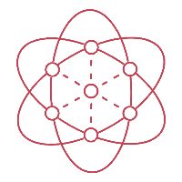
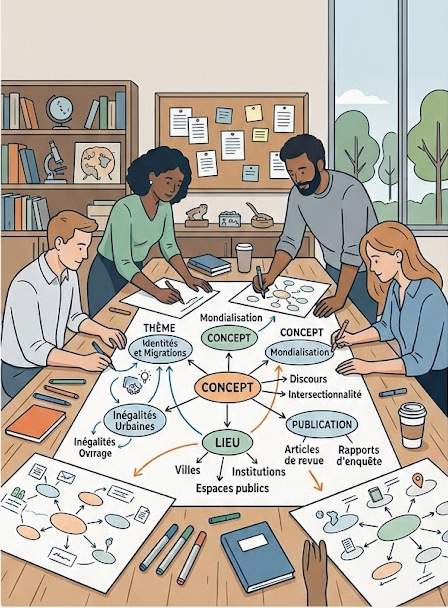

Sovisu+
dernières évolutions,
nouvelles propositions
Description et découverte des expertises
Juillet 2026
Retour d'expérience : Expert Finder System 2023
Recherche d'expertise assistée par IA · Paris 1 Panthéon-Sorbonne
Atouts
- Recherche d'expertises par IA
- Basé sur HAL · science ouverte
Limites
- Aucun contrôle des chercheurs
- Seulement les publications HAL
- Pas de traçabilité des demandes

Sovisu+ · DRIS — Université Paris 1

Avec le consortium CRISalid
Objectif : deux interfaces
Un outil interne
Chatbot
graphe de connaissance
institutionnel
- Recherche d'experts
- Cartes & dataviz
- Analyses complexes
Un outil public
ProjetIdyia
Expert Finder System ouvert au public
- IA non-conversationnelle
- Suivi des demandes
de mise en relation
Sovisu+ · DRIS — Université Paris 1
Le chatbot « crisalid-agents »
Une interface conversationnelle
↓
- Analyses
- Indicateurs
- Dataviz
- Rapports
→
Des agents
↓
ILaaS
Intelligence artificielle souveraine
→
Graphe de
connaissance
connaissance
Sovisu+ · DRIS — Université Paris 1
Des ateliers avec des chercheurs et des chercheuses
« Décrivez vos expertises / thème, objets de recherche »
↓
Résultat
Des cartes mentales
Spécialisation
Évolution
Connexion

Sovisu+ · DRIS — Université Paris 1